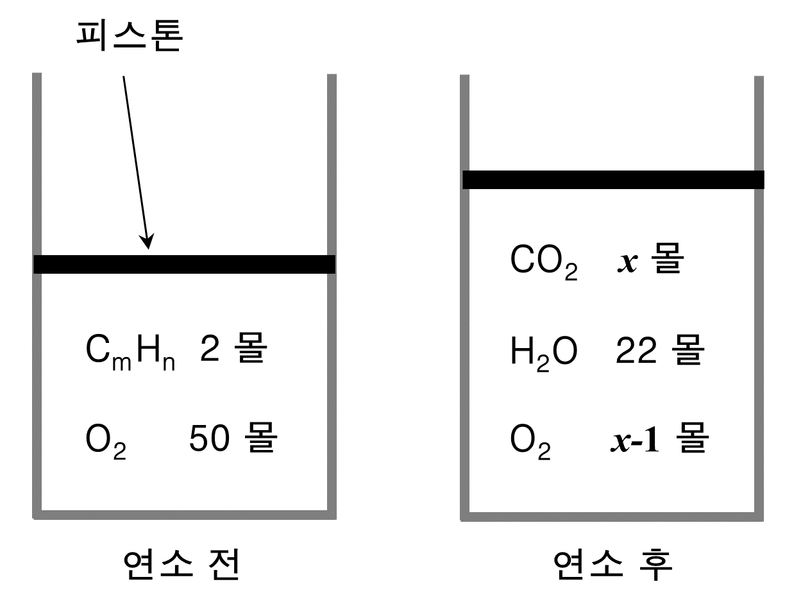

문제 4
아래는 일정한 온도와 압력에서 탄화수소(\(\text{C}_m\text{H}_n\))를 실린더에서 연소시키기 전 후 물질의 조성을 나타낸 그림이다.

(1) m, n, \(x\) 를 구하시오.
(2) 위에서 구한 탄화수소를 이용한 연소반응의 반응식을 제시하시오.
(전체 3점)
아래는 일정한 온도와 압력에서 탄화수소(\(\text{C}_m\text{H}_n\))를 실린더에서 연소시키기 전 후 물질의 조성을 나타낸 그림이다.
(1) m, n, \(x\) 를 구하시오.
(2) 위에서 구한 탄화수소를 이용한 연소반응의 반응식을 제시하시오.
(전체 3점)